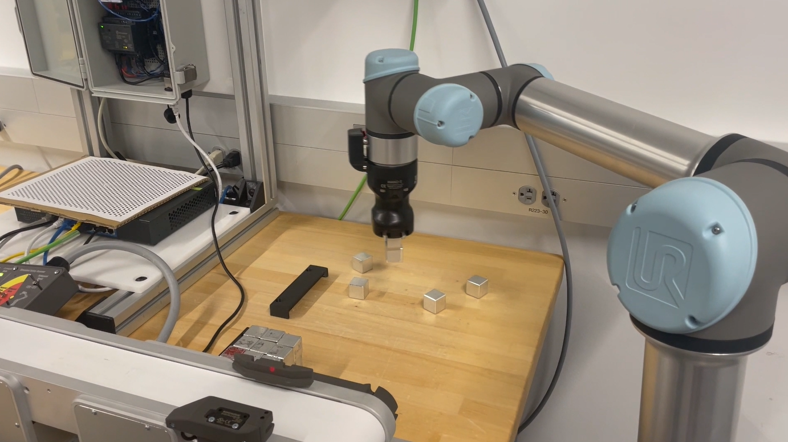
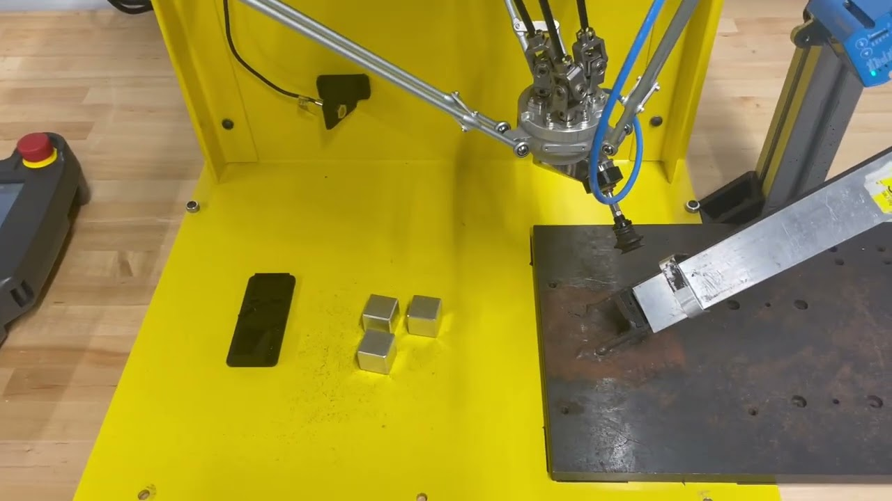

Industrial Robotic Automation System
A three-robot cell that used vision-guided picking, conveyor transfers, and coordinated palletizing to move randomly oriented aluminum cubes through a complete automated workflow.
System overview
The cell handled aluminum cubes scattered in an input area and moved them through three robotic stations. A vision-guided UR5e picked cubes and placed them on a conveyor. Conveyor guides aligned the cubes for a second UR5e, which used a dual gripper to collect two cubes at a time and load them into the Fanuc M-1iA feeder. The M-1iA then palletized the cubes into a grid.


My contributions
- Developed parametric palletizing logic so the operator could change the pallet layout instead of relying on one fixed set of taught positions.
- Defined robot/PLC I/O and communication bits for readiness, part handoffs, cycle completion, pallet status, and coordinated stops and resumes.
- Worked with teammates to program the UR5e and M-1iA teaching-pendant routines and integrate them with the Arduino Opta PLC.
Cell coordination
The PLC coordinated the stations and handled flow control across the cell. An operator panel could pause upstream cube collection and the conveyor for replenishment. Conveyor sensors also stopped upstream operation when cubes backed up, preventing the first station from overloading the line.
At the second station, the UR5e paused and resumed the conveyor as it collected and repositioned cubes with its dual gripper. The M-1iA waited for a queued part before palletizing; the PLC tracked cubes waiting in the feeder and enabled the operator to clear a full pallet before production resumed. The robot could then work through parts that had accumulated in the queue.
Outcome
The project brought three manipulators, conveyors, sensors, vision, and operator controls into one coordinated material-handling process. My work focused on making the pallet pattern configurable and defining the signals that let the robots and PLC coordinate their cycles.
Technology
UR5e, Fanuc M-1iA, Arduino Opta PLC, structured text, machine vision, conveyors, dual gripper